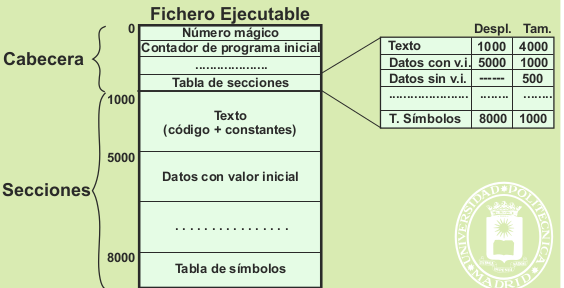
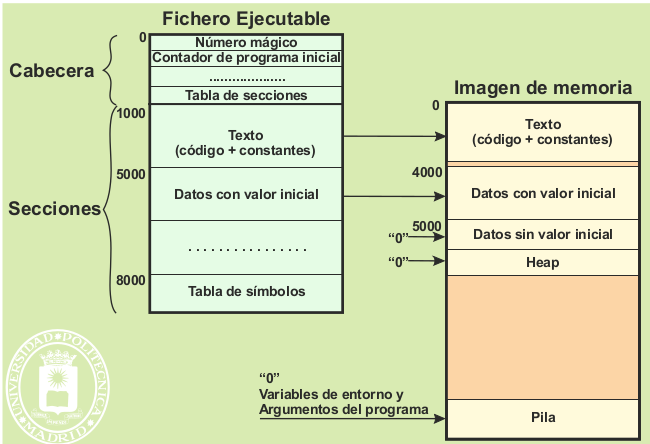
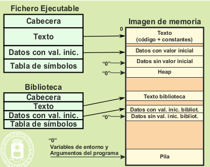

La creación de la imagen de memoria de un proceso se realiza a partir del fichero ejecutable y, en caso de montaje dinámico, de las bibliotecas dinámicas. Analizaremos primero la organización del fichero ejecutable, para ver seguidamente la creación de la imagen.
El fichero ejecutable contiene toda la información necesaria para que el sistema operativo pueda crear un proceso. Existen distintos formatos de ficheros ejecutables (por ejmplo Executable and Linkable Format (ELF)). En general, el ejecutable contiene una cabecera y unas secciones
La cabecera incluye las siguientes informaciones:
Es una clave que sirve para determinar que el fichero es realmente un ejecutable que tiene un determinado formato.
Es especialmente importante el contador de programa inicial, puesto que tiene que apuntar a la dirección de comienzo del programa.
La tabla de secciones tiene una entrada por cada sección, indicando su tipo, dirección de comienzo en el fichero y tamaño.
Las principales secciones que contiene un ejecutable son: la sección de texto, la sección de datos con valor inicial
y las tablas de símbolos. La sección de texto incluye el código del programa en lenguaje máquina así como las constantes
y las cadenas de texto.
La sección de datos con valor inicial incluye los datos estáticos con valor inicial. Esto es, los datos cuya vida
se extiende a lo largo de toda la vida del proceso y, además, tienen valor inicial.
Es de destacar que los datos sin valor inicial no tienen sección, puesto que no tiene sentido almacenar unos
datos que no tienen valor. Sin embargo, su tamaño está especificado en la tabla de secciones, puesto que en la imagen
de memoria sí hay que reservar espacio para ellos.
En las tablas de símbolos se encuentran dos tipos de informaciones. Por un lado, puede estar una información
de depuración que permita al depurador asociar los nombres de las variables con su posición en el mapa de memoria
así como las líneas de código fuente con la posición en el programa máquina. Por otro lado, en el caso de montaje
dinámico hay información para enlazar con las bibliotecas dinámicas.
La siguiente figura muestra la relación entre el fichero ejecutable y la imagen de memoria del proceso.
Se puede observar que la sección de texto del fichero ejecutable corresponde directamente con la región de
texto de la imagen de memoria.
En muchos casos la región de datos del proceso incluye los siguientes elementos
Estos datos se corresponden directamente con la sección de datos con valor inicial del ejecutable.
El tamaño de estos datos viene dado en la tabla de secciones del ejecutable, pero como no existe valor inicial se deben rellenar a ceros, lo que se indica en la figura por “0” →.
Como no tiene valor inicial, se marca como a rellenar a ceros. Además, su tamaño inicial viene determinado por el sistema operativo.
Finalmente, la región de pila sólo contiene la pila inicial, el resto del espacio destinado a pila no tiene información válida, por lo que se marca también a rellenar a ceros. La pila inicial la construye el sistema operativo en base a las variables de entorno del proceso padre y a los argumentos de llamada al programa.
Como muestra la figura , por cada biblioteca dinámica se necesitan dos regiones adicionales, la de texto y la de datos.
La nueva región de texto se corresponde con el texto de la biblioteca. La región de datos de la biblioteca se forma con los datos con valor inicial incluidos en la biblioteca más el espacio requerido para los datos sin valor inicial. Hay que destacar que esta región de datos no incluye heap, puesto que el heap es del proceso y no de la biblioteca.